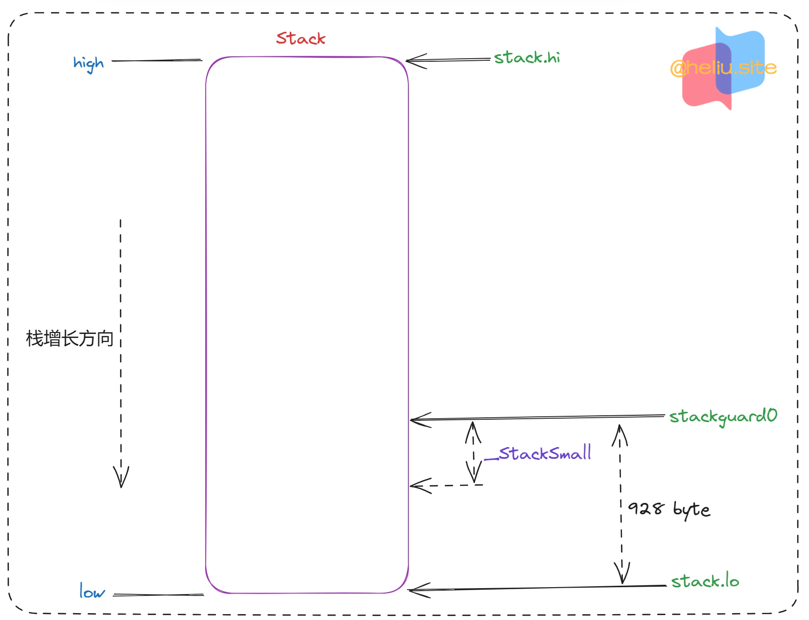
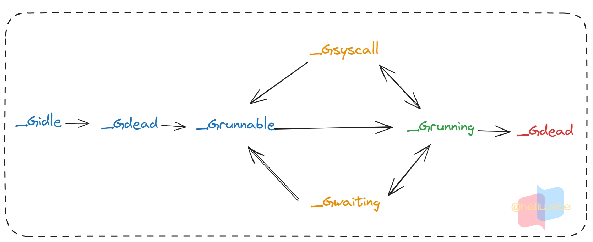

runtime中重要的结构体
💥本文章所有相关go代码参考自go 1.18+版本
type g struct
- 每一个实例对象代表一个
goroutine。 - 该结构体保存
CPU寄存器的值以及goroutine的所有信息，包括栈，gobuf结构体和其它的一些状态信息。 - 调度器代码可以通过
g对象来对goroutine进行调度：- 当
goroutine被调离CPU时，调度器代码负责把CPU寄存器的值保存在g对象的成员变量之中。 - 当
goroutine被调度起来运行时，调度器代码又负责把g对象的成员变量所保存的寄存器的值恢复到CPU的寄存器。
- 当
type g struct {
// Stack parameters.
// stack describes the actual stack memory: [stack.lo, stack.hi).
// stackguard0 is the stack pointer compared in the Go stack growth prologue.
// It is stack.lo+StackGuard normally, but can be StackPreempt to trigger a preemption.
// stackguard1 is the stack pointer compared in the C stack growth prologue.
// It is stack.lo+StackGuard on g0 and gsignal stacks.
// It is ~0 on other goroutine stacks, to trigger a call to morestackc (and crash).
//
// goroutine栈以及栈扩容相关信息
// 记录该goroutine使用的栈信息，[lo,hi)
stack stack // offset known to runtime/cgo
// 被正常的goroutine使用，编译器安插在函数头部的栈增长代码，用它来和SP比较，按需进行栈增长。
// 它的值一般是 stcak.lo + StackGuard，也可能被设置成 StackPreempt，以触发一次抢占。
// const _StackGuard = 928; linux amd64
// const stackPreempt = 0xfffffade; ((1<<64) - 1) & -1314
stackguard0 uintptr // offset known to liblink
// 原理和 stackguard0 差不多，只不过是被 g0 和 gsignal 中的C代码使用。
stackguard1 uintptr // offset known to liblink
// _panic 和 _defer 在defer和panic中被使用
// panic链表，记录当前goroutine触发的panic链表
_panic *_panic // innermost panic - offset known to liblink
// defer链表，记录整个调用链函数中注册的defer函数链表
_defer *_defer // innermost defer
// 关联到正在执行当前G的工作线程M，也就是 type m struct 结构体指针
m *m // current m; offset known to arm liblink
// 保存调度信息，主要是几个寄存器的值，g被调离前CPU以及寄存器信息保存在这里，恢复后从这里保存的信息开始
// 被调度器，用来保存 goroutine 的执行上下文。
sched gobuf // 档期前goroutine被调度或者被保存是CPU相关信息存储在这里
// 系统调用进入调用前，保存SP寄存器和IP寄存器的值
syscallsp uintptr// if status==Gsyscall, syscallsp = sched.sp to use during gc
syscallpc uintptr// if status==Gsyscall, syscallpc = sched.pc to use during gc
// 应为堆栈顶部的sp，用于回溯
stktopsp uintptr// expected sp at top of stack, to check in traceback
// param is a generic pointer parameter field used to pass
// values in particular contexts where other storage for the
// parameter would be difficult to find. It is currently used
// in three ways:
// 1. When a channel operation wakes up a blocked goroutine, it sets param to
// point to the sudog of the completed blocking operation.
// 2. By gcAssistAlloc1 to signal back to its caller that the goroutine completed
// the GC cycle. It is unsafe to do so in any other way, because the goroutine's
// stack may have moved in the meantime.
// 3. By debugCallWrap to pass parameters to a new goroutine because allocating a
// closure in the runtime is forbidden.
//
// param是一个通用的指针参数字段，用于在很难找到参数的其他存储的特定上下文中传递值。它目前有三种使用方式：
// 1.当通道操作唤醒被阻塞的goroutine时，它将param设置为指向已完成阻塞操作的sudog。
// 2.通过gcAssistAlloc1向其调用方发出信号，表明goroutine完成了GC循环。
// 以任何其他方式这样做都是不安全的，因为goroutine的堆栈可能在此期间发生了移动。
// 3.通过debugCallWrap将参数传递给新的goroutine，因为禁止在运行时分配闭包。
param unsafe.Pointer // passed parameter on wakeup
// 用来表示当前G的状态。
atomicstatus uint32 // 记录当前G的状态
stackLock uint32 // sigprof/scang lock; TODO: fold in to atomicstatus
// 当前 goroutine 的全局唯一 ID。
goid int64
// schedlink字段指向全局运行队列中的下一个g
// 所有位于全局运行队列中的g形成一个链表
// 被调度器用于实现内部链表、队列，对应的 guintptr 类型从逻辑上将等于 *g，
// 而底层类型却是个 uintptr，这样是为了避免写屏障。
schedlink guintptr
waitsince int64 // g被阻塞的大约时间
waitreason waitReason // if status==Gwaiting
// 抢占调度标志，如果需要抢占调度，设置preempt为true
// 抢占信号，重复 stackguard0 = stackpreempt
// 为true时，调度器会在合适的时机触发一次抢占
preempt bool // preemption signal, duplicates stackguard0 = stackpreempt
preemptStop bool // transition to _Gpreempted on preemption; otherwise, just deschedule
preemptShrink bool // shrink stack at synchronous safe point 在同步安全点收缩堆栈
// asyncSafePoint is set if g is stopped at an asynchronous
// safe point. This means there are frames on the stack
// without precise pointer information.
asyncSafePoint bool
paniconfault bool // panic (instead of crash) on unexpected fault address
gcscandone bool // g has scanned stack; protected by _Gscan bit in status
// 不能扩展栈，该值在系统调用前被设置为true，在系统调用返回是设置为false。
throwsplit bool // must not split stack
// activeStackChans indicates that there are unlocked channels
// pointing into this goroutine's stack. If true, stack
// copying needs to acquire channel locks to protect these
// areas of the stack.
// activeStackChans 表示有未锁定的通道指向这个 goroutines 堆栈
// 如果为true，堆栈复制需要获取通道锁来保护堆栈的这些区域
activeStackChans bool
// parkingOnChan indicates that the goroutine is about to
// park on a chansend or chanrecv. Used to signal an unsafe point
// for stack shrinking. It's a boolean value, but is updated atomically.
parkingOnChan uint8 // 赋值1，表示当前goroutine正在chan上
raceignore int8 // ignore race detection events
sysblocktraced bool // StartTrace has emitted EvGoInSyscall about this goroutine
tracking bool // whether we're tracking this G for sched latency statistics
trackingSeq uint8// used to decide whether to track this G
runnableStamp int64// timestamp of when the G last became runnable, only used when tracking
runnableTime int64// the amount of time spent runnable, cleared when running, only used when tracking
sysexitticks int64// cputicks when syscall has returned (for tracing)
traceseq uint64// trace event sequencer
tracelastp puintptr// last P emitted an event for this goroutine
// 关联到与当前G绑定的M，可以参考下 LockOSThread。
lockedm muintptr
sig uint32
writebuf []byte
// sigcode0 和 sigcode1 用于临时传参记录
sigcode0 uintptr // 记录当前需要跳转的SP地址，比如panic中即将跳转goexit
sigcode1 uintptr // 记录当前需要跳转的PC地址，比如panic中即将跳转goexit
sigpc uintptr
// 在创建goroutine时候被保存
gopc uintptr // pc of go statement that created this goroutine
// 创建此goroutine的祖先信息goroutine（仅在debug.traceback祖先时使用），在创建goroutin时候被保存
ancestors *[]ancestorInfo // ancestor information goroutine(s) that created this goroutine (only used if debug.tracebackancestors)
// goroutine函数的pc。在创建goroutin时候被保存
startpc uintptr // pc of goroutine function
racectx uintptr // 标记当前goroutine 0表示主goroutine
// 记录让当前goroutine等待的sudog，sudog是chan的等待队列，等待被读，c<-1操作引起当前，该参数在当前goroutine被恢复时判断使用
// Sudog结构这个g正在等待(有一个有效的elem指针);按锁定顺序。
// 主要用于实现 channel 中的等待队列。
waiting *sudog // sudog structures this g is waiting on (that have a valid elem ptr); in lock order
cgoCtxt []uintptr// cgo traceback context
labels unsafe.Pointer // profiler labels
// 缓存 timer 由于 time.Sleep。
timer *timer // cached timer for time.Sleep
//
selectDone uint32 // are we participating in a select and did someone win the race?
// Per-G GC state
// gcAssistBytes is this G's GC assist credit in terms of
// bytes allocated. If this is positive, then the G has credit
// to allocate gcAssistBytes bytes without assisting. If this
// is negative, then the G must correct this by performing
// scan work. We track this in bytes to make it fast to update
// and check for debt in the malloc hot path. The assist ratio
// determines how this corresponds to scan work debt.
gcAssistBytes int64 // GC信用值
}
type stack struct
Stack描述了Go的执行栈。栈的边界正好是[lo, hi)，两边都没有隐式的数据结构。- 注意栈是向下生长的。
// Stack describes a Go execution stack.
// The bounds of the stack are exactly [lo, hi),
// with no implicit data structures on either side.
type stack struct {
lo uintptr // 栈顶，指向内存【低地址】
hi uintptr // 栈底，指向内存【高地址】
}

type gobuf struct
- 保存
goroutine的调度信息，应用场景在这goroutine被选中调度起来去执行，或当前goroutine被抢占需要保存CPU信息然后下次接到从此处执行。 - 用来存储
goroutine执行上下文的sched字段需要格外注意，它与goroutine协程切换的底层实现相关。
type gobuf struct {
// sp字段存储的是栈指针，rsp寄存器的值
sp uintptr // 保存CPU的SP寄存器的值，存储的是被抢占或调度时CPU信息
// pc字段存储的是指令指针，rip寄存器的值
pc uintptr // 保存CPU的IP寄存器的值
// g字段用来反向关联到对应的G。
g guintptr // 记录当前这个gobuf对象属于那个goroutine
// ctxt字段指向闭包对象，也就是说用go关键字创建协程的时候传递的是一个闭包
// 这里会存储闭包对象的地址。rdx寄存器的值
ctxt unsafe.Pointer // 上下文信息
// 保存系统调用的返回值，因为从系统调用返回之后如果p被其他工作线程抢占
// 则这个goroutine会被放入全局运行队列被其他工作线程调度，其他线程需要知道系统调用的返回值
// ret字段用来存储返回值，实际上是利用AX寄存器实现类似C函数的返回值，目前只发现panic-recover机制用到了该字段。
ret sys.Uintreg
// lr字段在arm等架构上用来存储返地址，x86没有用到该字段。
lr uintptr
// bp字段用来存储栈帧基地址。rbp寄存器的值
bp uintptr // 对于支持帧指针的架构
}
G Status
// defined constants
const (
// goroutine 开始创建的状态，此时尚未初始化完成；
_Gidle = iota // 0
// goroutine 在待执行队列中，等待被执行；
_Grunnable // 1
// goroutine 正在执行，同一时刻一个P中只有一个g处于此状态；
_Grunning // 2
// goroutine 正在执行系统调用；
_Gsyscall // 3
// goroutine 处于挂起状态，需要等待被唤醒。gc、channel 或者锁操作时经常会进入这种状态；
_Gwaiting // 4
// _Gmoribund_unused is currently unused, but hardcoded in gdb
// scripts.
_Gmoribund_unused // 5
// goroutine 刚初始化完成或者已经被销毁，会处于此状态；
_Gdead // 6
// _Genqueue_unused is currently unused.
_Genqueue_unused // 7
// goroutine 正在栈扩容流程中；
_Gcopystack // 8
// goroutine 被抢占后的状态
_Gpreempted // 9
// _Gscan与前面的一些状态组合。
// 除了_Gscanrunning外，其他的组合状态都表示GC正在扫描goroutine的栈，goroutine没有在执行用户代码，
// 栈的所有权归设置了_Gscan标志位的goroutine所有。
_Gscan = 0x1000
_Gscanrunnable = _Gscan + _Grunnable // 0x1001
// _Gscanrunning在GC通知G扫描栈的时候，它被用来短暂的阻止状态变换，其他方面和_Grunning一样。
// 栈扫描完成后，goroutine将会切换回原来的状态，移除_Gscan标志位。
_Gscanrunning = _Gscan + _Grunning // 0x1002
_Gscansyscall = _Gscan + _Gsyscall // 0x1003
_Gscanwaiting = _Gscan + _Gwaiting // 0x1004
_Gscanpreempted = _Gscan + _Gpreempted // 0x1009
)

type m struct
m结构体用来代表工作线程，它保存了m自身使用的栈信息。- 当前正在运行的
goroutine以及与m绑定的p等信息。 - 每个工作线程都有唯一的一个m结构体的实例对象与之对应，m结构体对象除了记录着工作线程的诸如栈的起止位置、当前正在执行的goroutine以及是否空闲等等状态信息之外，还通过指针维持着与p结构体的实例对象之间的绑定关系。
- 于是，通过m既可以找到与之对应的工作线程正在运行的goroutine，又可以找到工作线程的局部运行队列等资源。
- 只要每个工作线程拥有了各自私有的m结构体全局变量，我们就能在不同的工作线程中使用相同的全局变量名来访问不同的m结构体对象。
type m struct {
// 并不是一个真正的goroutine，它的栈是由操作系统分配的，
// 初始大小比普通goroutine的栈要大，被用作调度器执行的栈。
// 程序刚初始化启动时第一个g0栈大概有64KB大小，后面的工作线程的g0栈有8KB大小
g0 *g // goroutine with scheduling stack
// 记录被调用者信息，在抢占调度中被设置
morebuf gobuf // gobuf arg to morestack
divmod uint32 // div/mod denominator for arm - known to liblink
// Fields not known to debuggers.
// 线程ID，该值在`go1.19.3/src/runtime/os_linux.go:minit`被调用，该方法在mstart函数线程刚启动时初始化。
// 该值默认是一个自增的ID
procid uint64 // for debuggers, but offset not hard-coded
// 本质上是用来处理信号的栈，因为一些UNIX系统支持为信号处理器配置独立的栈。
gsignal *g // signal-handling g
goSigStack gsignalStack // Go-allocated signal handling stack
sigmask sigset // storage for saved signal mask
// 通过TLS实现m结构体对象与工作线程之前的绑定
// 线程本地存储，存储内容只对当前线程可见。线程本地存储的时m.tls的地址，m.tls[0]存储的是当前运行的g，
// 因此线程可以通过g找到当前的m、p、g0等信息。
tls [6]uintptr // thread-local storage (for x86 extern register)
mstartfn func() // 工作线程启动后需要执行的函数
// 指向工作线程正在运行的goroutine的g结构体对象，该参数的作用是在切换到g0栈后清除之前的g，
// 记录在这里指向的是M当前正在执行的G。
curg *g // current running goroutine
caughtsig guintptr // goroutine running during fatal signal
// 记录与当前工作线程绑定的p结构体对象
// GMP中的P，即关联到当前M上的处理器。
p puintptr // attached p for executing go code (nil if not executing go code)
// 用来将P传递给M，调度器一般是在M阻塞时为m.nextp赋值，等到M开始运行后会尝试从nextp处获取P进行关联。
nextp puintptr
// 用来暂存执行系统调用之前关联的P。
oldp puintptr // the p that was attached before executing a syscall
// M的唯一id。
id int64 // 当前线程的ID，根据schedt.mnext记录的工作线程个数而设置的
// mallocing = 1，当前goroutine正在分配内存
mallocing int32
throwing int32
// 不为空时表示要关闭对curg的抢占，字符串内容给出了相关的原因。
// 用于控制当前 goroutine 是否可被抢占。
// 1. 当一个 goroutine 执行一些关键操作时（如获取锁、执行系统调用等），它可能需要暂时关闭抢占，以避免在关键操作期间被抢占导致死锁或竞争条件的发生。
// 2. 程序员可以通过使用 runtime.LockOSThread() 函数来将当前 goroutine 绑定到一个 OS 线程上，从而避免抢占的发生。
// 3. 如果在执行关键操作时需要暂时关闭抢占，可以使用 runtime.LockOSThread() 函数将当前 goroutine 绑定到一个 OS 线程上，并在操作完成后调用 runtime.UnlockOSThread() 函数将其解绑。
preemptoff string // if != "", keep curg running on this m
// 记录当前M持有锁的数量，不为0时能够阻止抢占发生。
// 用来记录当前 goroutine 持有的互斥锁数量的
// 1. 当 goroutine 持有一个互斥锁时，它不能被抢占，因为如果被抢占了，其他 goroutine 就无法获取该锁。
// 2. 为了避免这种情况的发生，Go 语言的调度器会在检查是否应该抢占当前 goroutine 之前，先检查它是否持有互斥锁。
// 3. 如果当前 goroutine 持有互斥锁，则调度器会暂时将其标记为不可抢占状态，直到该 goroutine 释放锁为止。
// 4. 因此，m.locks 字段是用来辅助调度器实现这一机制的。
// 5. 当一个 goroutine 获取一个互斥锁时，m.locks 字段会被更新，标记该 goroutine 持有相应的互斥锁。
// 6. 当 goroutine 释放锁时，m.locks 字段也会被更新，清除相应的标记。
// 7. 调度器在决定是否应该抢占一个 goroutine 时，会检查该 goroutine 是否持有互斥锁，以此来避免因抢占导致的锁竞争和死锁问题。
locks int32 // 尝试获取锁的次数，在lock中加一，在unlock减一
dying int32
profilehz int32
// spining状态：表示当前工作线程正在试图从其他工作线程的本地运行队列偷取goroutine
// 表示当前M正处于自旋状态。
spinning bool // m is out of work and is actively looking for work
blocked bool // m is blocked on a note m在note上被屏蔽，表示当前M正在休眠中
newSigstack bool // minit on C thread called sigaltstack
printlock int8
incgo bool // m is executing a cgo call
freeWait atomic.Uint32 // Whether it is safe to free g0 and delete m (one of freeMRef, freeMStack, freeMWait)
// fastrand 用于在一些随机值的使用需要
fastrand uint64
needextram bool
traceback uint8
ncgocall uint64 // number of cgo calls in total
ncgo int32 // number of cgo calls currently in progress
cgoCallersUse uint32 // if non-zero, cgoCallers in use temporarily
cgoCallers *cgoCallers // cgo traceback if crashing in cgo call
doesPark bool // non-P running threads: sysmon and newmHandoff never use .park
// 没有goroutine需要运行时，工作线程睡眠在这个park成员上
// 其他线程通过这个park唤醒该工作线程
// 用来支持M的sleep和wakeup，可以很方便地实现每个M单独sleep和wakeup。
park note
// 记录所有工作线程的一个链表
// 把所有的M连起来，构成allm链表。
alllink *m // on allm
// 被调度器用于实现链表，如空闲M链表。
schedlink muintptr
// 关联到与当前M绑定的G，可参考LockOSThread。
lockedg guintptr
createstack [32]uintptr // stack that created this thread.
lockedExt uint32 // tracking for external LockOSThread
lockedInt uint32 // tracking for internal lockOSThread
nextwaitm muintptr // next m waiting for lock
waitunlockf func(*g, unsafe.Pointer) bool
waitlock unsafe.Pointer
waittraceev byte
waittraceskip int
startingtrace bool
syscalltick uint32
// 用来把已经退出运行的M连起来，构成sched.freem链表，方便下次分配时复用。
freelink *m // on sched.freem
// mFixup is used to synchronize OS related m state (credentials etc)
// use mutex to access.
mFixup struct {
lock mutex
fn func(bool) bool
}
// these are here because they are too large to be on the stack
// of low-level NOSPLIT functions.
libcall libcall
libcallpc uintptr // for cpu profiler
libcallsp uintptr
libcallg guintptr
syscall libcall // stores syscall parameters on windows
vdsoSP uintptr // SP for traceback while in VDSO call (0 if not in call)
vdsoPC uintptr // PC for traceback while in VDSO call
// preemptGen counts the number of completed preemption
// signals. This is used to detect when a preemption is
// requested, but fails. Accessed atomically.
preemptGen uint32
// Whether this is a pending preemption signal on this M.
// Accessed atomically.
//
// 这个M上是否有一个待处理的抢占信号。原子操作。
// 该参数在 preemptM 函数中从0设置为1。
signalPending uint32
dlogPerM
mOS
// Up to 10 locks held by this m, maintained by the lock ranking code.
locksHeldLen int
locksHeld [10]heldLockInfo
}
type p struct
p结构体用于保存工作线程执行go代码时所必需的资源。- 比如
goroutine的运行队列，内存分配用到的缓存，局部goroutien运行队列等等。
type p struct {
// P的位移ID，等于当前P在allp数组中的下标。
id int32
// 当前P所处状态，也就是当前P上的g的状态
status uint32 // one of pidle/prunning/...
// link是一个没有写屏障的指针，被调度器用来构造链表
link puintptr
// 在每次调度器调用时递增，记录当前P的调度次数
// 记录调度发生的次数，实际上在每发生一次goroutine切换且不继承时间片的情况下，该字段会加一。
schedtick uint32 // incremented on every scheduler call
// 在每次系统调用时递增，记录当前P的系统调用次数
// 发生每一次系统调用就会加一。
syscalltick uint32 // incremented on every system call
// sysmon观察到的最后一个时钟信号
// 该值被用于sysmon线程记录被监控p的系统调用时间和运行时间，注意这里是与sysmon相关的
// type sysmontick struct {
// schedtick uint32
// schedwhen int64
// syscalltick uint32
// syscallwhen int64
// }
// 被监控线程用来存储上一次检查时的调度器时钟滴答，用于实现时间片算法。
sysmontick sysmontick // last tick observed by sysmon
// 本质上是个指针，反向关联到当前P绑定的M。
m muintptr // back-link to associated m (nil if idle)
mcache *mcache // p的内存模块管理
pcache pageCache
raceprocctx uintptr
// 用于缓存*_defer接口，避免频繁堆分配
deferpool []*_defer // pool of available defer structs of different sizes (see panic.go)
// 根据源码中 pp.deferpool = pp.deferpoolbuf[:0] 可知，deferpoolbuf只是作为deferpool的内存地址在使用
deferpoolbuf [32]*_defer
// Cache of goroutine ids, amortizes accesses to runtime·sched.goidgen.
// 用来从全局sched,goidgen处生气goid分配区间，批量申请以减少全局范围的锁竞争用。
goidcache uint64
goidcacheend uint64
// Queue of runnable goroutines. Accessed without lock.
// 本地goroutine运行队列
// 当前P的就绪队列，用一个数组和一头一尾两个下标实现了一个环型队列。
runqhead uint32 // 队列头
runqtail uint32 // 队列尾
runq [256]guintptr // 使用数组实现的循环队列
// runnext, if non-nil, is a runnable G that was ready'd by
// the current G and should be run next instead of what's in
// runq if there's time remaining in the running G's time
// slice. It will inherit the time left in the current time
// slice. If a set of goroutines is locked in a
// communicate-and-wait pattern, this schedules that set as a
// unit and eliminates the (potentially large) scheduling
// latency that otherwise arises from adding the ready'd
// goroutines to the end of the run queue.
//
// 如果不为nil，则指向一个被当前G准备好(就绪)的G，接下来将会继承当前G的时间片开始运行。
// 该字段存在的意义在于，假如有一组goroutine中有生产者和消费者，它们在一个channel上频繁的等待、唤醒，
// 那么调度器会把它们作为一个单元来调度。每次使用runnext比添加到本地runq尾部能大幅减少延迟。
runnext guintptr // 记录着下一个将要执行的goroutine
// Available G's (status == Gdead)
// 记录着所有状态为Gdead的空闲的goroutine链表
// go关键字配的时候优先从这里获取，goroutine执行完时保存在这里
// 用来缓存已经退出运行的G，方便再次分配时进行复用。
gFree struct {
gList // type gList struct {head guintptr} guintptr是uintputr的自定义类型
n int32 // 记录着当前空闲的g的数量
}
sudogcache []*sudog
sudogbuf [128]*sudog
// Cache of mspan objects from the heap.
mspancache struct {
// We need an explicit length here because this field is used
// in allocation codepaths where write barriers are not allowed,
// and eliminating the write barrier/keeping it eliminated from
// slice updates is tricky, moreso than just managing the length
// ourselves.
len int
buf [128]*mspan
}
tracebuf traceBufPtr
// traceSweep indicates the sweep events should be traced.
// This is used to defer the sweep start event until a span
// has actually been swept.
traceSweep bool
// traceSwept and traceReclaimed track the number of bytes
// swept and reclaimed by sweeping in the current sweep loop.
traceSwept, traceReclaimed uintptr
palloc persistentAlloc // per-P to avoid mutex
// 用于下面字段对齐
_ uint32 // Alignment for atomic fields below
// 以下timer0When和timerModifiedEarliest字段维护这这个P的执行时间，也是用于抢断判断依据
// The when field of the first entry on the timer heap.
// This is updated using atomic functions.
// This is 0 if the timer heap is empty.
// timer 堆上第一个条目的 when 字段。
// 这是使用原子函数更新的
// 如果 timer 堆为空，则为 0
timer0When uint64 // 堆顶元素什么时候执行
// The earliest known nextwhen field of a timer with
// timerModifiedEarlier status. Because the timer may have been
// modified again, there need not be any timer with this value.
// This is updated using atomic functions.
// This is 0 if the value is unknown.
// 具有 timerModifiedEarlier 状态的定时器的最早已知 nextwhen 字段。
// 因为定时器可能已经被再次修改，所以不需要任何具有该值的timer
// 这是使用原子函数更新的
// 如果没有 timerModifiedEarlier 计时器，则为 0
timerModifiedEarliest uint64 // 如果有timer修改为更早执行时间了，将执行时间更新到当更早时间
// Per-P GC state
gcAssistTime int64 // Nanoseconds in assistAlloc
gcFractionalMarkTime int64 // Nanoseconds in fractional mark worker (atomic)
// gcMarkWorkerMode is the mode for the next mark worker to run in.
// That is, this is used to communicate with the worker goroutine
// selected for immediate execution by
// gcController.findRunnableGCWorker. When scheduling other goroutines,
// this field must be set to gcMarkWorkerNotWorker.
gcMarkWorkerMode gcMarkWorkerMode
// gcMarkWorkerStartTime is the nanotime() at which the most recent
// mark worker started.
gcMarkWorkerStartTime int64
// gcw is this P's GC work buffer cache. The work buffer is
// filled by write barriers, drained by mutator assists, and
// disposed on certain GC state transitions.
gcw gcWork
// wbBuf is this P's GC write barrier buffer.
//
// TODO: Consider caching this in the running G.
wbBuf wbBuf
runSafePointFn uint32 // if 1, run sched.safePointFn at next safe point
// statsSeq is a counter indicating whether this P is currently
// writing any stats. Its value is even when not, odd when it is.
statsSeq uint32
// Lock for timers. We normally access the timers while running
// on this P, but the scheduler can also do it from a different P.
// 锁定timers。我们通常在此P上运行时访问timers，但调度程序也可以从不同的P上执行此操作
timersLock mutex // 操作timer的互斥锁
// Actions to take at some time. This is used to implement the
// standard library's time package.
// Must hold timersLock to access.
// 必须持有 timersLock 才能访问
// 当前关于P的timer，可能出现当前P中很多goroutine被挂在不同的timer上
timers []*timer // 该P上的所有timer，必须加锁去操作这个字段，因为不同的P操作这个字段会有竞争
// Number of timers in P's heap.
// Modified using atomic instructions.
// P 堆中的timers数量，使用原子指令修改
numTimers uint32 // P堆上所有的timer数量
// Number of timerModifiedEarlier timers on P's heap.
// This should only be modified while holding timersLock,
// or while the timer status is in a transient state
// such as timerModifying.
// P 的堆上 timerModifiedEarlier 计时器的数量
// 这只应在持有 timersLock 时修改，或者当定时器状态处于诸如 timerModifying 之类的瞬态状态时进行修改
adjustTimers uint32
// Number of timerDeleted timers in P's heap.
// Modified using atomic instructions.
// P 的堆中 timerDeleted timers的数量
// 使用原子指令修改
deletedTimers uint32 // 被标记为删除的timer，要么是我们调用stop，要么是timer自己触发后过期导致的删除
// Race context used while executing timer functions.
timerRaceCtx uintptr
// preempt is set to indicate that this P should be enter the
// scheduler ASAP (regardless of what G is running on it).
// preempt 设置为指示该 P 应尽快进入调度程序（无论 G 在其上运行什么）
// 在GO1.14版本被引入，以支持新的异步抢占机制。
preempt bool
pad cpu.CacheLinePad
}
P Status
const (
// P status
// _Pidle means a P is not being used to run user code or the
// scheduler. Typically, it's on the idle P list and available
// to the scheduler, but it may just be transitioning between
// other states.
//
// The P is owned by the idle list or by whatever is
// transitioning its state. Its run queue is empty.
//
// 空闲状态。此时的P没有被用来执行用户代码或调度器代码，通常位于空闲链表中，能够被调度器获取，
// 它的状态可能正在由空闲转变成其他状态。P的所有权归空闲链表或某个正在改变它状态的线程所有，本地runq为空。
_Pidle = iota // 空闲状态
// _Prunning means a P is owned by an M and is being used to
// run user code or the scheduler. Only the M that owns this P
// is allowed to change the P's status from _Prunning. The M
// may transition the P to _Pidle (if it has no more work to
// do), _Psyscall (when entering a syscall), or _Pgcstop (to
// halt for the GC). The M may also hand ownership of the P
// off directly to another M (e.g., to schedule a locked G).
//
// 运行中状态。当前P正被某个M持有，并且用于执行用户代码或调度器代码。
// 只有持有P所有权的M，才被允许将P的状态从_Prunning转变为其他状态。
// 在任务都执行完以后，M会把P设置为_Pidle状态。在进入系统调用时，M会把P设置为_Psyscall状态。
// 挂起以执行GC时，会设置为_Pgcstop状态。某些情况下，M还可能会直接把P的所有权交给另一个M。
_Prunning // 运行中状态
// _Psyscall means a P is not running user code. It has
// affinity to an M in a syscall but is not owned by it and
// may be stolen by another M. This is similar to _Pidle but
// uses lightweight transitions and maintains M affinity.
//
// Leaving _Psyscall must be done with a CAS, either to steal
// or retake the P. Note that there's an ABA hazard: even if
// an M successfully CASes its original P back to _Prunning
// after a syscall, it must understand the P may have been
// used by another M in the interim.
//
// 系统调用状态。此时的P没有执行用户代码，它和一个处于syscall中的M间存在弱关联关系，可能会被另外一个M窃取走。
_Psyscall // 系统调用中状态
// _Pgcstop means a P is halted for STW and owned by the M
// that stopped the world. The M that stopped the world
// continues to use its P, even in _Pgcstop. Transitioning
// from _Prunning to _Pgcstop causes an M to release its P and
// park.
//
// The P retains its run queue and startTheWorld will restart
// the scheduler on Ps with non-empty run queues.
//
// GC停止状态。P被STW挂起以执行GC，所有权归执行STW的M所有，执行STW的M会继续使用处于_Pgcstop状态的P。
// 当P的状态从_Prunning转变成_Pgcstop时，会造成关联的M释放P的所有权，然后进入阻塞状态。
// P会保留它的本地runq，然后Start The World会从新启动这些本地runq不为空的P。
_Pgcstop // GC停止状态
// _Pdead means a P is no longer used (GOMAXPROCS shrank). We
// reuse Ps if GOMAXPROCS increases. A dead P is mostly
// stripped of its resources, though a few things remain
// (e.g., trace buffers).
//
// 停用状态。因为GOMAXPROCS收缩，会造成多余的P被停用，当GOMAXPROCS再次增大时还会被复用。
// 一个停用的P，大部分资源被剥夺，只有很少量保留。
_Pdead // 停用状态
)
type schedt struct
schedt结构体用来保存调度器的状态信息和(可运行或空闲的)goroutine的容器以及保存goroutine的运行队列- 每个Go程序中只有一个调度器，多以每个Go程序中schedt结构体只有一个实例对象，该实例对象在源代码中被定义成了一个共享的全局变量
- 这样每个工作线程都可以访问它以及它所拥有的goroutine运行队列，我们称这个运行队列为全局goroutine运行队列
- 全局运行队列是每个工作线程都可以读写的，因此访问它需要加锁，然而在一个繁忙的系统中，加锁会导致严重的性能问题
- 于是又为每个工作线程引入一个私有的局部goroutine运行队列，工作线程优先使用自己的局部运行队列，只有必要时才会去访问全局运行队列
- 这大大减少了锁冲突，提高了工作线程的并发性
- 在Go调度器源代码中，局部运行队列被包含在p结构体的实例对象之中，每一个运行着go代码的工作线程都会与一个p结构体的实例对象关联在一起
type schedt struct {
// accessed atomically. keep at top to ensure alignment on 32-bit systems.
// 用作全局的goid分配器，以保证goid的唯一性。
// P中的goidcache就是从这里批量分配获取goid的。
goidgen uint64
// 以下两个字段可以在IO轮询时判断是否有需要的timer已到时间需要去执行
// 上次网络轮询的时间点，如果当前轮询，则为 0
// 记录的是上次执行netpoll的时间，如果等于0，则表示某个线程正在阻塞式地执行netpoll。
lastpoll uint64 // time of last network poll, 0 if currently polling
// 下次timer应该被唤醒时间点，来自timer四叉数中的时间
// 表示阻塞式地netpoll将在何时被唤醒。GO1.14版本重构了Timer，引入了该字段，唤醒netpoller以处理Timer。
pollUntil uint64 // time to which current poll is sleeping
// 全局范围的调度器锁，访问sched中的很多字段需要提前获得该锁。
lock mutex
// When increasing nmidle, nmidlelocked, nmsys, or nmfreed, be
// sure to call checkdead().
// 有空闲的工作线程M组成的链表
// 空闲M链表的链表头，nmidle记录的是空闲M的数量，即链表的长度。
midle muintptr // idle m's waiting for work
// 空闲的工作线程数量
nmidle int32 // number of idle m's waiting for work
// 统计的是与G绑定(LockOSThread)且处于空闲状态的M，绑定的G没有在运行，相应的M不能用来运行其他G，只能挂起，以便进入空闲状态。
nmidlelocked int32 // number of locked m's waiting for work
// 下一个工作线程M的ID值
// 记录了共创建了多少个M，同时也被用作下一个M的ID。
mnext int64 // number of m's that have been created and next M ID
// 最多只能创建maxmcount个工作线程M，初始化时该值为10000，schedinit()中被设置。
// 限制了最多允许的M的个数，除去那些已经释放的。
maxmcount int32 // maximum number of m's allowed (or die)
// 统计的是系统M的个数。比如监控线程sysmon启动时会 nmsys++。
nmsys int32 // number of system m's not counted for deadlock
// 统计的是累计已经释放了所少M。
nmfreed int64 // cumulative number of freed m's
// 记录的是系统goroutine的数量，会被原子性的更新。
ngsys uint32 // 系统 goroutine 的数量； 原子更新
// 由空闲的p结构体对象组成的链表
// 空闲P链表的表头，npidle记录了空闲P的个数，也就是链表的长度。
pidle puintptr // idle p's
// 空闲的p结构体对象的数量
npidle uint32
// 正在自旋的M的数量
// 记录的是处于自旋状态的M的数量。
nmspinning uint32 // See "Worker thread parking/unparking" comment in proc.go.
// Global runnable queue.
// goroutine全局运行队列，全局的就绪队列。
runq gQueue
// 记录的是全局就绪队列的长度。也就是全局队列goroutine的个数。
runqsize int32
// disable controls selective disabling of the scheduler.
//
// Use schedEnableUser to control this.
//
// disable is protected by sched.lock.
//
// 用来禁止调度用户goroutine，其中的user变量被置为true后，调度器将不在调度执行用户goroutine，
// 系统goroutine不受影响。期间就绪的用户gouroutine会被临时存储放到disable.runnable队列中，变量n记录了队列长度。
// GC期间。
disable struct {
// user disables scheduling of user goroutines.
user bool
runnable gQueue // pending runnable Gs
n int32 // length of runnable
}
// Global cache of dead G's.
// gFree是所有已退出的goroutine对应的g结构体对象组成的链表
// 用于缓存g结构体对象，避免每次创建gouroutine时都重新分配内存
// 用来存储已经退出运行的G，lock是本结构单独的锁，避免争用sched.lock。stack和noStack这两个列表分别用来存储有栈的G，因为在
// G结束运行被回收的时候，如果栈大小超过了标准大小，就会被释放，所以有一部分G是没有栈的。变量n是两个列表之和，也就是总缓存了多少个G。
gFree struct {
lock mutex
stack gList // Gs with stacks
noStack gList // Gs without stacks
n int32
}
// Central cache of sudog structs.
// 构成了 sudog 结构的中央缓存，供各个P存储。
sudoglock mutex
sudogcache *sudog
// Central pool of available defer structs of different sizes.
// 构成了 _defer 结构的中央缓存。
deferlock mutex
deferpool [5]*_defer
// freem is the list of m's waiting to be freed when their
// m.exited is set. Linked through m.freelink.
// freem 是设置 m.exited 时等待释放的 m 的列表。 通过 m.freelink 链接。
// 一组已经结束运行的M构成的链表头，通过m.freem链接到下一个项，链表中的内容在分配新的M时会被复用。
freem *m
// 表示GC正在等待运行，和stopwait、stopnote一同被用于实现STW。
// stopwait记录了STW需要停止的P的数量，发起STW的线程会先把GOMAXPROCS赋值给stopwait，也就是需要停止所有的P。
// 再把gcwaiting置为1，然后再stopnote上睡眠等待被唤醒。其他正在运行的M检测到gcwaiting后会释放关联P的所有权，并把P的状态
// 置为_Pgcstop，再把stopwait的值减1，然后M把自己挂起。M在自我挂起之前如果检测到stopwait==0，也就是所有P都已经停止了，
// 就会通过stopnote唤醒发起STW的线程。
gcwaiting uint32 // gc is waiting to run; GC是否正在处于等待
stopwait int32
stopnote note
// sysmonwait的值为0或1，表示sysmon线程是否sleep。
// 1. 0时，sysmon没有sleep。
// 2. 1时，sysmon在sysmonnote上sleep。
// 当STW时sysmon可能会挂在sysmonnote上，在STW退出时会唤醒sysmon。
// 当所有P都空闲(可能是陷入系统调用中)，sysmon可能会挂在
sysmonwait uint32
sysmonnote note
// While true, sysmon not ready for mFixup calls.
// Accessed atomically.
// 表示主线程已经创建了监控线程sysmon，但是后者尚未开始运行，某些操作需要等到sysmon启动之后才能进行。
sysmonStarting uint32
// safepointFn should be called on each P at the next GC
// safepoint if p.runSafePointFn is set.
// 如果设置了 p.runSafePointFn，则应该在下一个 GC 安全点对每个 P 调用 safepointFn
// 是一个Function Value.safePointWait 和 Value.safePointNote的左右类似stopwait和stopnone，被runtime.forEachP用来确保每个P都在
// 下一个GC安全点执行了 safePointFn。
safePointFn func(*p)
safePointWait int32
safePointNote note
// 用来设置性能分析的采样频率。
profilehz int32 // cpu profiling rate
// 最后一次改变gomaxprocs的时间，参看procresize()函数
// 统计了改变GOMAXPROCS所花费的时间。
procresizetime int64 // nanotime() of last change to gomaxprocs
totaltime int64 // ∫gomaxprocs dt up to procresizetime
// sysmonlock protects sysmon's actions on the runtime.
//
// Acquire and hold this mutex to block sysmon from interacting
// with the rest of the runtime.
// 监控线程sysmon访问runtime数据时会加上的锁，其他线程可以通过它和监控线程进行同步。
sysmonlock mutex
}
重要的全局变量
var (
allgs []*g // 保存所有的g
allm *m // 所有的m构成的一个链表，包括下面的m0
allp []*p // 保存所有的p，len(allp) == gomaxprocs
ncpu int32 // 系统中cpu核的数量，程序启动时由runtime代码初始化
gomaxprocs int32 // p的最大值，默认等于ncpu，但可以通过GOMAXPROCS修改
sched schedt // 调度器结构体对象，记录了调度器的工作状态
m0 m // 代表进程的主线程
g0 g // m0的g0，也是m0.g0 = &g0
// Information about what cpu features are available.
// Packages outside the runtime should not use these
// as they are not an external api.
// Set on startup in asm_{386,amd64}.s
processorVersionInfo uint32 // CPU厂商信息，能根据该标识找到对应厂商
isIntel bool // true.当前处理器信息是英特，false.不是英特处理器
)